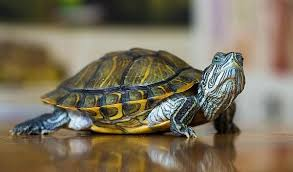

- QQQQ
- AAAA
-
- QQQQ
- WWWW
- EEEE
-
- RRR
- List out side
序列清單
- QQQ
- AAA
- ZZZ
年薪百萬的代價？工程師淚曝超慘職業病 網嚇：經歷了什麼
人人都嚮往能年薪破百萬，好過上「財富自由」的自在人生。不過就有網友好奇，工作壓力大但收入可觀的工程師們，工作做久了可能會出現什麼樣的「職業病」，沒想到釣出一票工程師分享慘痛的經驗。 © 由 三立新聞網 提供 ▲工程師淚曝慘痛的職業病。（示意圖／資料照） 8日有網友在PTT指出，「人說十萬青年十萬肝形容工程師的生活也不為過了，想想看我們工程師不是輪班就是一直整天看電腦」，他也指出「輪班的生活就是日夜顛倒，造成生理時鐘錯亂，容易引疾，整天看電腦造成晚年眼睛視力不好，有乾眼症」。 不僅如此，原PO也點出「座位坐久也容易血尿。常常也容易幻想」，讓他除了好奇「怎麼保養自己的身體」，也想知道「工程師做久會有什麼職業病？」 貼文引來不少網友分享親身經驗，「會變得很急躁沒有耐心」、「老花眼，看近物要拿下眼鏡」、「久坐背痛」、「好像隨時都會聽到值班手機的鈴聲」、「肚子變大」、「易怒／情緒化／變胖／講話內容變很有攻擊性」、「禿頭、白頭髮、口臭、講不好聽的笑話」。 不過也有人表示，「除了變胖，上面很多症狀我都沒，各位是經歷了什麼」、「職業傷害才對吧」、「太慘了吧」。